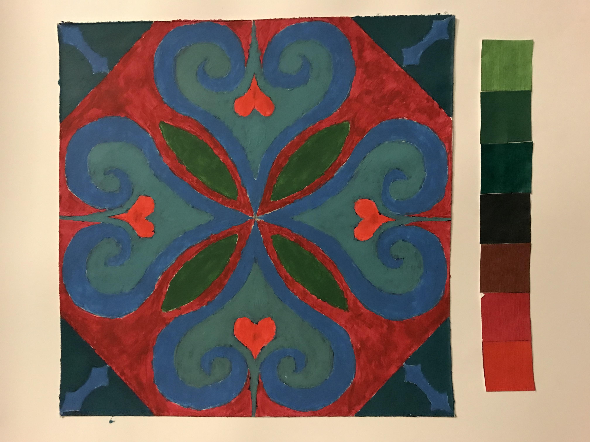
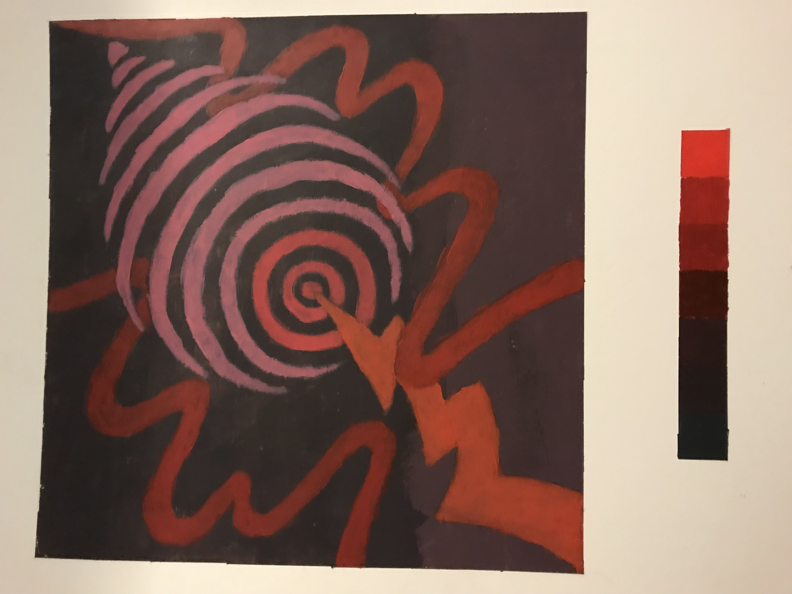
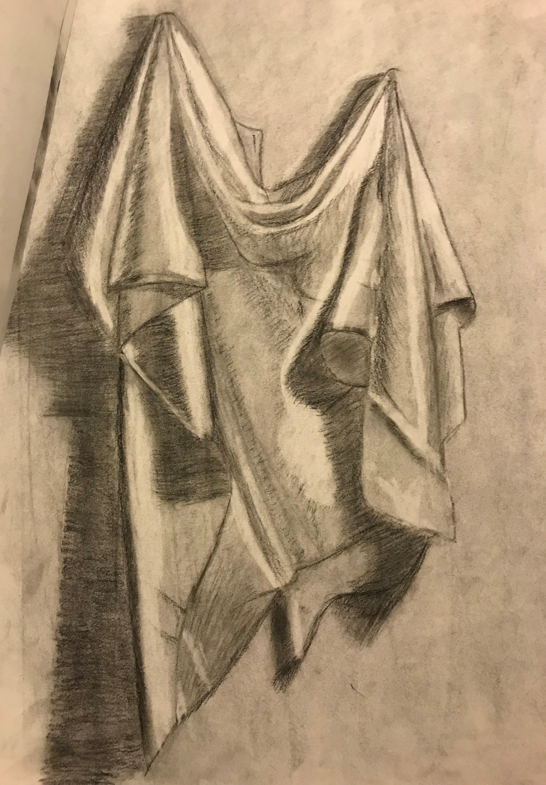
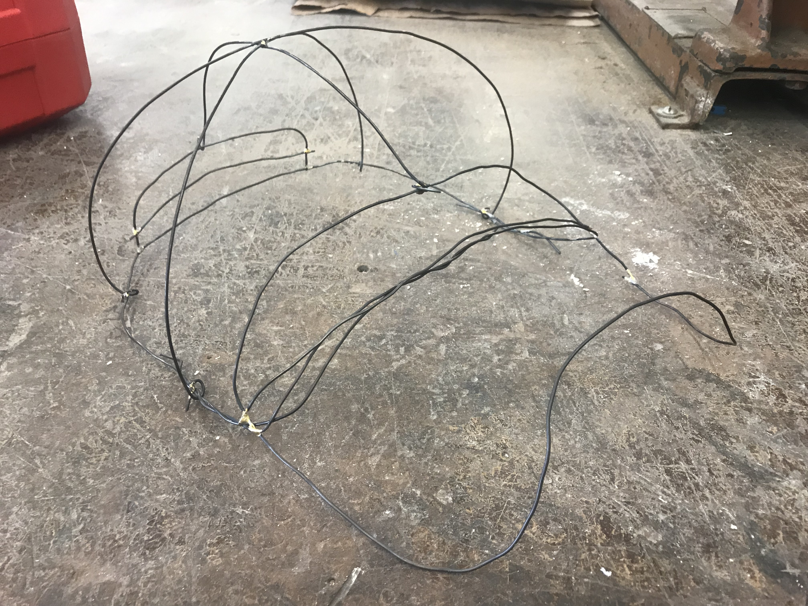
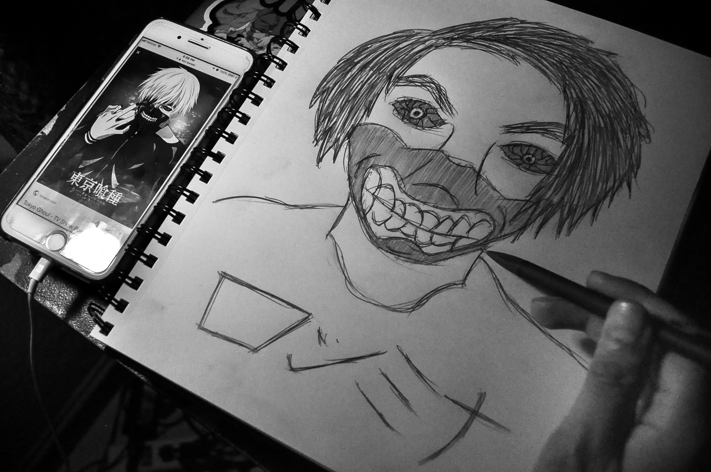
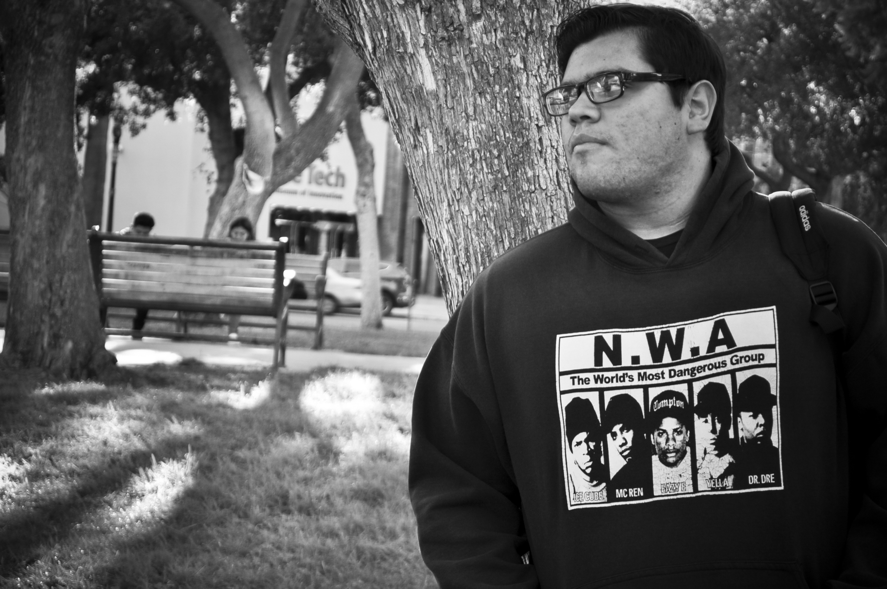
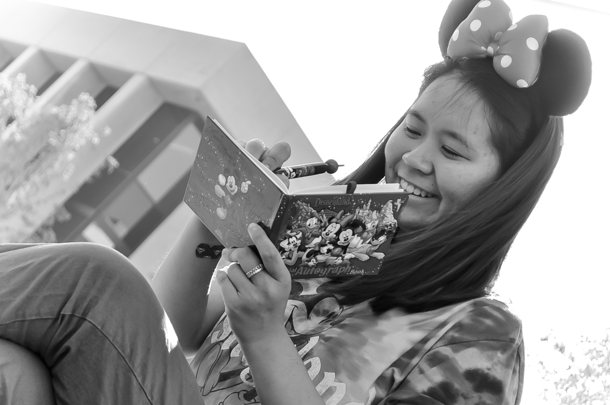
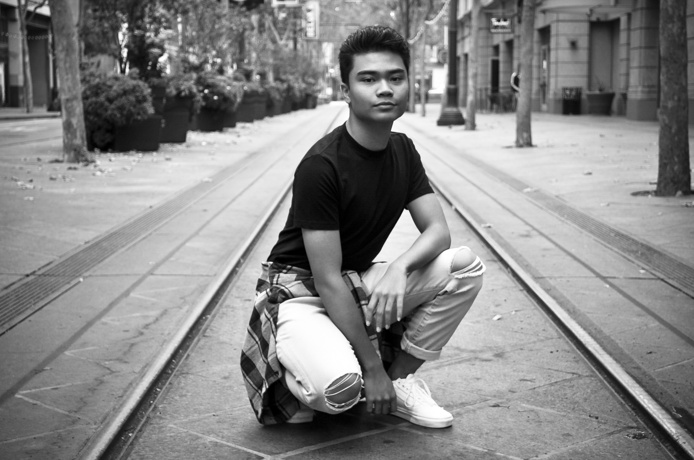

Portfolio
2D Art Radial Symmetry Design

Using acrylic paint for this project, the goal was to maintain symmetry on all the spaces in our design, and compose interesting shapes. Also, the use of colors are split-complementary. What came to mind before starting this project was hearts, specifically the logo of one of my favorite video games, "Kingdom Hearts."
2D Art Rhythm & Space Design

For this project, we had to consider rhythm and space while composing a design. We used acrylic paint to saturate our chosen color, then used analogous colors for our design based on the color we chose. We also had to choose our favorite song to listen to and base our design off the song. I felt like designing something a bit representational off of a dubstep song called, "DJ Fresh - Louder (Doctor P & Flux Pavilion Remix)." At the time, it has been a while since I listened to dubstep because I used to be obsessed when I was in high school, so I decided to relive the memory by choosing that song.
3D Art Font Project

This was the final project for 3D class which we had to propose our ideas before starting. My idea was to make the word, "heaven" out of styrofoam, and cut out shapes of clouds because heaven is in the clouds. I added stairs when the words, "stairway to heaven" came to mind. I chose to compose this model mainly because I usually prefer cloudy weathers (sometimes a bit of rain too) because it calms me down a bit after having long days at school.
Experimenting with value drawing

One of the things I had to experiment with in drawing class was value. A sheet was provided for us on the wall of the classroom as well as a light to add shadows to the sheet. The goal was to create a sense of volume by adding light and dark shadows to the sheet. For myself, value is one of my weaknesses when it comes to drawing.
Experimenting Brass Brazing

Brass Brazing was our first sculpture exercise, where we had to use wires, flux, and a torch. I decided to make a hat and see if it would fit on my head, and it turns out it fit. Everyone in the class including my professor said I should put it on, and got pictures.
Digital Collage Project

For this project, we had to come up with ideas on what we want our digital collage made in Adobe Photoshop to be about. I wanted to go for showing one of my favorite rock bands, Linkin Park. This collage depicts the lead singer who died of committing suicide in July 2017. His name is Chester Bennington, and in my experiences, Bennington was one of the legends who died at a young age, and I believe even if he may no longer be in our society, Linkin Park is still one of the world's favorite rock band. The whole message of this digital collage to me says that legends who die, no matter how old or young they are, are always remembered, just like every loved one we lose. In other words, a tribute to loved ones who departed.
Self Portrait photograph

This photography project is a self portrait of who I am. The parameter for this project was to not show our face. For this project, I showed my style of art which is sometimes drawing anime/manga. In this photograph, there's an image of a character named "Ken Kaneki" from this anime, "Tokyo Ghoul" on my phone, and also me drawing myself but with only my hand. I used that image and a selfie I took on my phone as references and drew myself to see what I would look like if I wore Ken Kaneki's mask. Also, I took Elementary Japanese class at the time, so the bottom of the drawing is my name written in Japanese Katakana. So what this photograph says about me is that I sometimes use images as references when I draw, and that I'm imaginative, but also with the way I drew was quickly moving my pencil, showing that I'm sometimes crazy. I also sometimes like anime.
Series of Fine Art's Environmental Portraiture photographs

This photography project required a series of 3 photographs consisting of one fine art topic, so I went for environmental portraiture. For this project, I had 3 of my friends, Jose, Michelle, and Ranz assist me. Since it was portraits, I wanted to get a bit creative by having my friends choose an outfit that briefly demonstrates who they are. Jose wore his sweater of N.W.A, a hip hop music group from Los Angeles, depicting he has a love for hip hop and rap music. Michelle wore Disney apparel and also had Disney props, depicting she loves Disney movies and singing music from the movies. Ranz (who's also DMA here at SJSU) wore his denims and a plaid shirt around his waist, depicting he's a hip hop dancer. These all take place in Downtown San Jose because we hang out a lot of the time together downtown.
First Video Art Project
For this first video project, I thought of showing life of YouTube vloggers by having 2 of my friends assist me by having them vlog with their cameras. They're both YouTubers and vlog a lot, and also love photoshoots as well, which is shown on one of my friends around halfway throughout this video. A lot of times, vloggers do photoshoots for other social media like Instagram, Facebook and Twitter. I wanted to add a little sophistication by adding both the perspectives of my friends' cameras and also mine, like a behind the scenes demonstration. I also decided to use black and white on my camera's perspective showing that it's often my favorite effect to use.
Video as Installation Project
This shows the 4 elements: water, earth, fire, and air. I considered the elements as values to our lives, also showing what they're used for to why they're a value. I wanted to add their usual color and overlaid multiple videos for each element to make it a bit abstract, but it's generic overall. The way I imagined it being installed in a gallery was having 4 small walls arranged like a cube, showing each element on each side. The mockup was made in Adobe Premiere Pro using the cube effect.
Back to homepage!